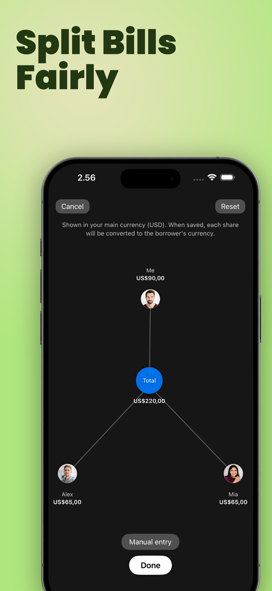
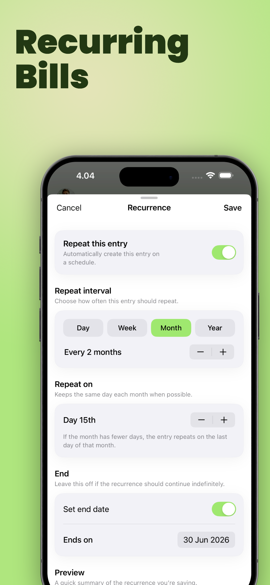
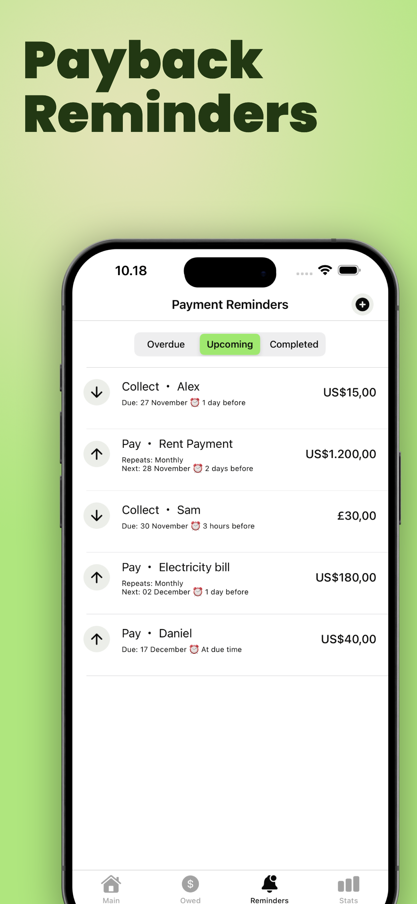
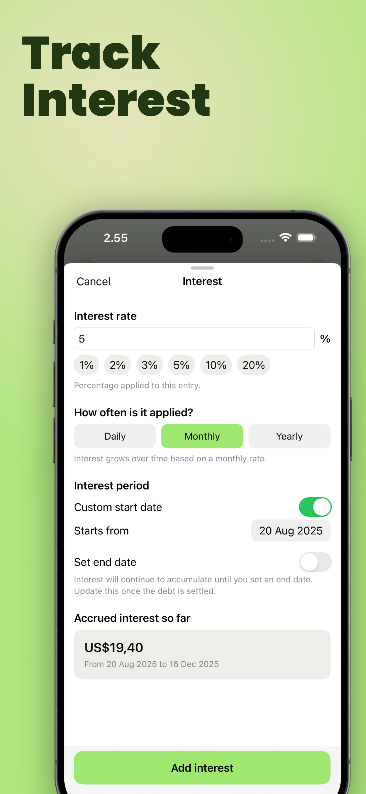
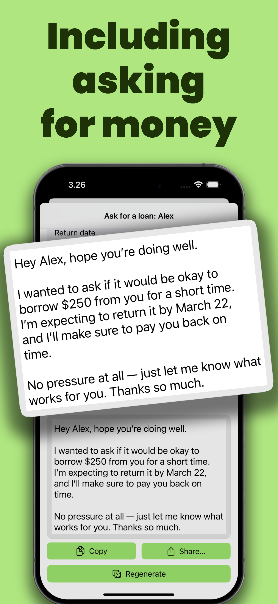

Features
All YouOweMe features
YouOweMe is built for real-life money between people: one clear balance, replayable history, focused Loan Records, reminders, statements, and calmer conversations around repayment.
New to the app? Start with the Quick Start guide to understand the core model before exploring every feature.

See the app in action
Explore the main YouOweMe features for tracking IOUs, Split Entry, shared bills, balance history, separate loan records, repayments, reminders, PDF records, interest, and money conversations.
Money between people
Start from people, balances, and the everyday money situations that happen between them.

One running balance
Keep IOUs, shared bills, repayments, and partial paybacks in one clear history.

Separate loans
Keep important loans and repayment plans in their own record while everything still counts toward the full balance with that person.

Know when to follow up
Smart Money Check-Ins help you notice when silence, promised dates, or repayment progress need attention.

Know what to say
Money Conversations turn the real balance and history into calmer follow-up, ask-for-loan, and repayment update messages.

Share a live balance
Share an always-current balance in a browser link without requiring the other person to install the app.

Split Entry
Create one shared expense, split it equally or exactly, and save clean per-person balances without duplicate entries.

Recurring bills
Use recurring entries for rent, utilities, subscriptions, allowances, and repeated household or family costs.

Payback reminders
Track upcoming, overdue, and completed reminders for collecting money or repaying someone else.

Share clear records
Create clear PDF statements for family reimbursements, clients, larger balances, or formal summaries.

Track interest
Add interest to long-running balances when the amount needs a more precise record.

Log money by voice
Capture real-world money moments quickly by speaking naturally instead of typing every detail.
Balance & records
Keep the actual money story clear: who paid, who repaid, what changed, what was shared, and where things stand now.
Running balances
Every entry updates one clear balance per person, so you can see who owes whom without rebuilding the history from chats, notes, bank transfers, or memory.
This is also useful for temporary support, where one person covers rent, groceries, bills, or other help and repayments happen later in steps.
With Balance Replay, you can scroll back through entries and see who owed what around the moment you are reviewing.
Learn what a running balance means and how it works.
Main use cases
- Long-running IOUs with friends or family
- Couple, roommate, or client balances that change over time
- Partial repayments and shared expenses in one balance history
See how this applies to roommate bills and shared household costs.
See shared expense tracking
Balance Replay
Scroll through your entry history and the balance updates with the moment you are viewing. Instead of seeing only today's total, you can understand who owed what around older entries, repayments, and interest as it stood then.
Main use cases
- Checking what was owed before or after a repayment
- Seeing who owed what around an older entry
- Noticing when a balance changed direction
- Reviewing interest using the date being shown
Loan Records
Loan Records help you keep one specific loan or repayment plan in its own clean space without creating another person or losing the main history.
Start a record for a car repair loan, rent deposit, client project, family bill, or any balance that deserves its own view. Add repayments, extra amounts, corrections, notes, due dates, interest, and images as the situation changes.
For support that should be repaid gradually, Loan Records can keep one temporary support arrangement separate while the full person balance stays correct.
If you only need to work out the weekly, biweekly, or monthly steps before tracking them, use the free Payment Plan Calculator.
Every linked entry still updates the full balance with that person, but the Loan Record also shows its own remaining balance. Each loan can stay visible in Timeline too, including when it started and when it was settled.
Main use cases
- Larger or longer-running loans
- Multiple balances with the same person
- Repayments that need to stay tied to the right loan
- Client projects, family bills, rent deposits, car repairs, or structured repayment plans
Relationship Timeline
Timeline connects money movement with money communication. For each person, it brings balance changes, repayments, separate loans, follow-ups, repayment updates, loan requests, shared statement links, PDF statements, text exports, and CSV exports into one chronological view.
Before you send another message, you can see what changed, what you already shared, and whether a follow-up or repayment update makes sense.
Main use cases
- Seeing the full history with one person
- Checking when you last followed up or sent an update
- Keeping separate loans visible inside the relationship
- Seeing when you shared a statement, PDF, Live Link, text history, or CSV export
- Understanding balance phases, settlements, and direction changes
- Seeing a clearer next step before another money conversation
IOU tracking
Record money lent, money borrowed, informal loans, covered purchases, and everyday IOUs without turning the app into accounting software.
Main use cases
- Money a friend still owes you
- Money you borrowed and want to repay clearly
- Family loans, client balances, and personal payback records

Borrow/lend history
Keep the everyday entry history clear, whether you lent money, borrowed money, paid for something, or received a repayment. The point is to preserve context before details fade.
Main use cases
- Checking how a balance got to its current amount
- Confirming old repayments or partial payments
- Keeping a record for family or client conversations
Partial repayments
Record a repayment even when it does not settle the full amount. The running balance updates immediately, which keeps follow-ups fair and specific. Need the message wording too? Read how to follow up after someone pays only part.
Main use cases
- Someone pays back part of an IOU
- You repay a balance in stages
- Client or family balances move gradually over time
Notes and entry history
Add context to entries so the future version of you knows what the payment was for. Notes help turn a number into a story both sides can understand.
Main use cases
- Groceries, rent, subscriptions, online orders, and travel
- Explaining a repayment or adjustment
- Keeping cleaner records for formal statements
Search and quick entry
Find older amounts or notes quickly and add new entries without friction, especially when you track money often.
Main use cases
- Large histories with many entries
- Frequent family reimbursements or household purchases
- Fast capture before details are forgotten
Multi-currency support
Track balances in different currencies when the real-life situation crosses countries, travel, or people who pay in different currencies.
Main use cases
- Travel expenses and international friends
- Family purchases in different currencies
- Separate balances that should not be merged into one currency
CSV export
Export records when you need a spreadsheet backup, want to review your history elsewhere, or need to preserve data outside the app. Timeline can also show when a CSV history was exported, so sharing and export actions do not disappear from context.
Trying to decide whether a spreadsheet is enough? Read the spreadsheet vs app comparison for tracking money owed.
Main use cases
- Personal backups
- Tax-time or client record review
- Moving records into a spreadsheet for analysis
Communication & sharing
The app does not only store numbers. It helps you decide when communication matters, what to say next, and what context you already shared.
Smart Money Check-Ins
Silence is often what makes money situations awkward. Smart Money Check-Ins adds a proactive timing layer by watching real balances, repayment progress, reminders, promised dates, and stretches of silence.
When communication starts to matter, the app suggests the right next step, explains why now, and takes you into a ready-to-send message before tension has time to grow. Timeline places that guidance next to the relationship history that explains it.
Main use cases
- Following up when someone owes you and silence is becoming risky
- Sending a repayment update when you owe someone
- Avoiding repetitive prompts with adaptive resurfacing
Money Conversations
Money Conversations turns your real balance and history into ready-to-send messages for the three situations people avoid most: Follow-Up, Ask for Loan, and Repayment Update.
For temporary support, this helps turn the real balance into a calm ask, repayment update, or request for more time.
Choose a tone, adjust details if needed, and keep full control before sending. Messages can include a Live Link so the other person can view the latest statement without installing the app. When you copy or share a Money Conversation, Timeline can record that the communication happened.
Need a one-time manual message first? Read the polite reminder guide or browse repayment reminder examples.
Main use cases
- Follow-up when someone owes you
- Ask for Loan when you need help and want to ask respectfully
- Repayment Update when you owe someone and want to keep trust intact
Follow-Up messages
Generate a clear check-in when someone still owes you and you want the message to feel calm, specific, and grounded in the actual balance. Timeline helps you see whether you already followed up recently or shared the details another way.
Main use cases
- Late repayments
- Friendly reminders after silence
- Awkward IOUs where wording matters

Ask for Loan messages
When you need to borrow money, create a clearer request from the real context instead of rewriting the message until it feels acceptable.
For a manual starting point before using Money Conversations, read how to ask family for temporary financial help clearly.
Main use cases
- Asking a friend or family member for help
- Explaining amount, reason, and expectations
- Keeping the tone respectful and direct

Repayment Update messages
If you owe someone, send a clear update that explains what changed, what has been repaid, and where things stand now. Timeline can show when you sent a repayment update, which makes the next message easier to judge. If you are sending a partial repayment yourself, the same guide includes a responsible partial repayment update example.
Main use cases
- Confirming a partial repayment
- Keeping trust when you need more time
- Reducing confusion about the remaining balance
Live Link
Live Link turns a shared statement into an always-current view. You manage the balance in YouOweMe while the other person opens one browser link to see the latest balance and transaction history as entries change.
Only one person needs the app. The other person does not need to install anything or create an account. Timeline can also show when a Live Link was shared, so you know you already sent a current statement.
Main use cases
- Sharing a live balance with family, partners, roommates, or clients
- Replacing repeated screenshots with one current link
- Giving the other person visibility without asking them to install the app
Shareable summaries
Send clear summaries when the other person needs context, whether that is a quick balance explanation, a Live Link, or a more formal PDF statement. Timeline records sharing and export events, so those moments stay part of the money story.
Main use cases
- Reducing back-and-forth questions
- Sharing a balance before a conversation
- Giving people a record they can review later
Comparing YouOweMe with group expense apps?
If you are choosing between collaborative group splitting and a private running-balance record with Live Links, repayment history, and calmer follow-ups, compare YouOweMe with Splitwise.
Main use cases
- Deciding whether everyone needs to join the same expense ledger
- Choosing between a group split and one clear per-person balance
- Understanding when Live Links and Money Conversations matter more than a group record
Shared costs & schedules
For repeated household costs, one-time splits, recurring charges, and balances that keep changing. Try the free Running Balance Calculator to see how expenses and repayments update one current balance.
Split Entry for shared expenses
Record one shared expense instead of rebuilding the same entry person by person. Choose the participants, enter the total once, include your own share when needed, and let YouOweMe turn the result into accurate entries for each real person.
Dinners, tickets, groceries, trips, rent, and client costs all end with clean individual balances, not manual math or duplicate records.
Main use cases
- One shared expense becoming separate balance entries
- Including yourself in the calculation without creating a debt to yourself
- Equal, visual, or exact custom shares for real-world fairness
Equal splits
Divide a shared bill evenly when everyone has the same share. If you were part of the expense too, include yourself in the math while saving entries only for the people who actually owe you.
Main use cases
- Meals, groceries, household supplies, and trip costs
- Shared expenses where your own share should be excluded
- Fast splits where fairness is straightforward
Custom splits
When a shared expense is not evenly divided, assign each person the right share before saving. The app keeps the total reconciled and carries the correct amount into each person's balance.
Main use cases
- Different room sizes or rent shares
- Uneven groceries or travel contributions
- Couples or families with different agreements
Visual and manual split control
For two or three participants, the draggable bubble view makes uneven shares feel quick and natural. For larger groups or receipt-based splits, manual entry gives exact amount control before anything is saved.
Main use cases
- Quick uneven splits when one person had more
- Exact receipt-based amounts for larger groups
- Shares that stay consistent if the total changes later
Payment reminders
Set reminders for money you need to collect or repay. Reminders work for one-time IOUs, payback dates, and recurring bills, so the app can hold the memory for you.
Main use cases
- Upcoming, overdue, and completed payment reminders
- Promised repayment dates
- Recurring family, roommate, or household bills
Recurring entries
Some money patterns are not one-offs. Rent, subscriptions, allowances, weekly coffees, monthly bills, and shared household costs tend to come back again and again.
Recurring Entries turns one entry into a schedule. Choose the rhythm from daily to yearly, keep it tied to the right weekday or calendar date, and optionally set when it should end. As each repeat comes due, the app creates a real entry so balances and history stay accurate.
Main use cases
- Rent, utilities, subscriptions, and allowances
- Every 2 weeks, every 3 months, or yearly repeats
- Repeated household costs that should update the real balance
Rent, utilities, subscriptions, allowances, and repeated household costs
Use recurring entries and reminders together for the payments that keep returning. This is useful for roommates, couples, family reimbursements, and anyone who manages bills for someone else.
For a parent-specific example, see the parent-bill reimbursement workflow. For household costs, read how to track roommate bills and shared household costs.
Main use cases
- Roommate rent and utilities
- Parent subscriptions or online purchases
- Household costs that repeat but still need a clear balance
Formal records
For larger balances, long-running records, clients, family reimbursements, or any situation where a more formal summary helps.
PDF statements
Generate clean, shareable PDF statements from your records when you need a more formal summary. Statements reflect the real balance and history, not a manually rebuilt spreadsheet. Timeline can show when a PDF statement was shared, so the formal record stays connected to the rest of the history.
Starting manually? Download the Family Reimbursement Tracker Template for a simple Excel, CSV, or printable PDF log.
Main use cases
- Client balances and small business records
- Family reimbursements that need a polished summary
- Long-term or interest-based balances
Optional logo/image branding
Add your own logo or image to a statement when the record needs to feel more professional or easier to recognize.
Main use cases
- Small business or freelancer summaries
- Client-facing repayment records
- Formal family reimbursement records
Payment due dates
Add due dates when timing matters, then use reminders and statements to keep expectations clear.
Main use cases
- Repayment agreements
- Client or business balances
- Family reimbursements with a known payback date
Interest tracking
Add an interest rate, choose daily, monthly, or yearly accrual, set a start date, and see accrued interest so far.
Main use cases
- Long-running balances where interest matters
- Larger informal loans
- Clear repayment summaries with principal and interest context
Long-running balances
YouOweMe is designed for money situations that do not finish in one transaction. The balance can move up or down as entries, repayments, splits, and adjustments happen.
Main use cases
- Family, roommate, couple, or client records over months
- Balances with partial repayments
- Situations where the history matters as much as the amount
Client or small business records
Use YouOweMe for simple client balances and repayment records when you need clarity, not a full accounting or invoicing replacement.
Main use cases
- Freelancer repayment records
- Simple client payback histories
- Clear statements for balances both sides need to review
Convenience, privacy, and reliability
Fast capture, offline access, privacy controls, and sync options help the app fit everyday use.
Voice to Entry
Say something like "I lent Alex 30 euros for groceries yesterday." The app turns it into a structured entry with the right person, amount, category, and date.
Main use cases
- Fast capture when you are on the go
- Daily use without typing every detail
- Natural wording for real-world money moments
Works offline
Use YouOweMe even when you do not have a connection. This is useful when you need to record something immediately and do not want the moment to disappear.
Main use cases
- Travel, poor reception, or quick entry on the go
- Private records you want available on device
- Tracking without depending on a live web app
No mandatory sign-up
Start tracking without being forced through an account wall. You can keep simple money records quickly when the need is immediate.
Main use cases
- Quick IOU tracking
- People who want less account friction
- Testing the app before using cloud features
Face ID / Touch ID lock
Add device-level privacy protection around sensitive money records, so casual access to your phone does not mean casual access to IOU details.
Main use cases
- Personal balances you want to keep private
- Family or client records on the same device
- Extra privacy for everyday finance data
Sync across devices and multiple cloud profiles
Use cloud sync and multiple cloud profiles when you need records available across devices or want to keep different money contexts separate.
Main use cases
- Moving between iPhone and other Apple devices
- Separating personal, family, or client profiles
- Keeping important balances backed by cloud features
Everything included
All the core tools for clear money records live in one place.
- Running balances
- Balance Replay
- Relationship Timeline
- Loan Records
- IOU tracking
- Split Entry for shared expenses
- Partial repayments
- Payment reminders
- Recurring entries
- Smart Money Check-Ins
- Money Conversations
- Live Link
- PDF statements
- Interest tracking
- Voice to Entry
- CSV export
- Multi-currency support
- Sync across devices and multiple cloud profiles
- Face ID / Touch ID lock
- Works offline
- No mandatory sign-up
Ready to track money between people clearly?
Start from your real situation, keep the balance and timeline clear, and use the right follow-up when money gets awkward.
Want proof from real users first? See what users say about You Owe Me.
Updated